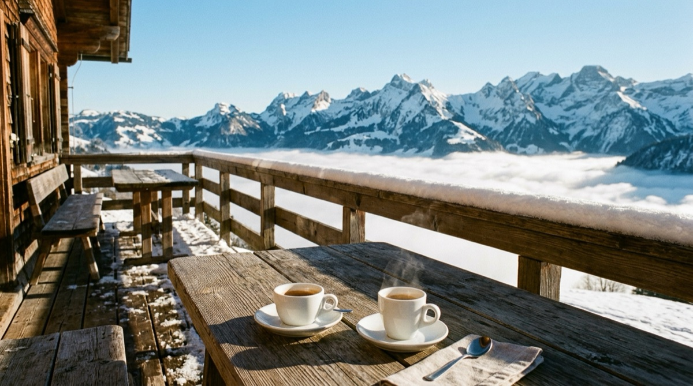
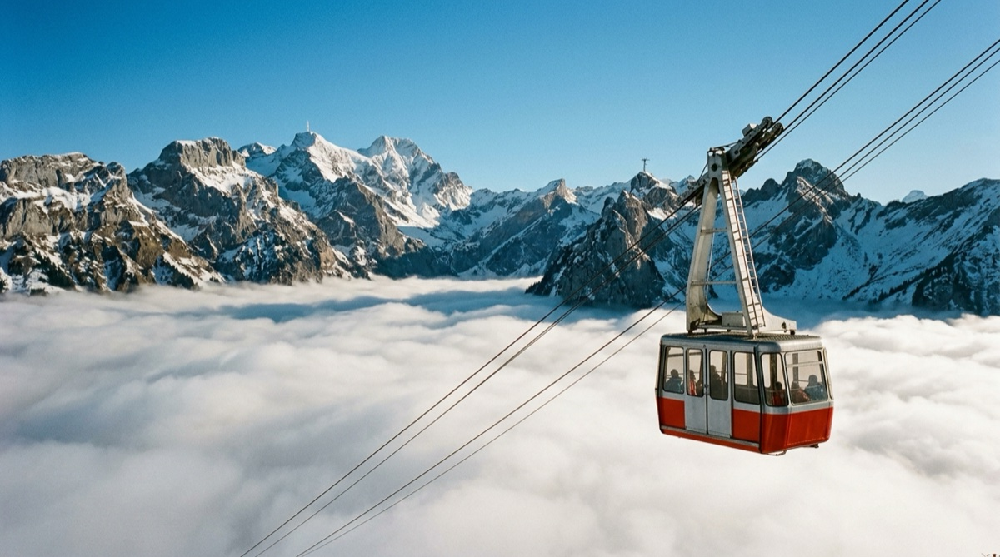
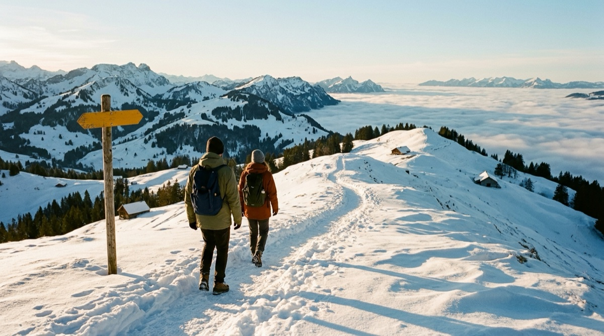

SunCatcher.ch
Scans 650+ live webcams across Switzerland, Austria, and Bavaria using AI to map where the sun is shining right now versus where fog lingers.
Open suncatcher.ch ↗Eastern Switzerland · Fog Escape Playbook
St. Gallen sits at ~675 m—right inside the Swiss autumn and winter Hochnebel layer (typically 800–1,600 m). Match your morning destination to today's fog ceiling, confirm it in 60 seconds on live webcams, and head straight into blue sky.
Interactive Decision Helper
Dial in the forecast fog ceiling (Hochnebelobergrenze) and wind direction from MeteoSwiss to see which peaks sit cleanly above the sea of fog.
Ebenalp & Säntis cable cars reopen ~Dec 18, 2026.
St. Gallen at Center
Pins update automatically with your live weather and Spot Finder filters. Click any pin for travel time, live webcams, and Google Maps directions from St. Gallen.
1,064 m → 2,502 m
Ordered from lowest to highest altitude. Status badges update automatically based on your Spot Finder settings above.



Verify Before You Leave
Forecasting the exact fog ceiling is notoriously difficult—even MeteoSwiss notes it as one of the hardest forecasts. A 30-second webcam check saves wasted trips.
Kronberg operates two Roundshot webcams on the same page: one at the summit (1,663 m) and one at the valley station (884 m). Compare both at breakfast:
Scans 650+ live webcams across Switzerland, Austria, and Bavaria using AI to map where the sun is shining right now versus where fog lingers.
Open suncatcher.ch ↗Built with OST (Eastern Switzerland University of Applied Sciences). Visualizes the expected fog ceiling 1–6 days ahead. Always verify in MeteoSwiss that fog is actually forecast for days 3–6.
Open nebelkarte.ch ↗The primary source for regional text forecasts (Obergrenze um … m), live station sunshine & temperature readings, visible satellite animation, and user Meteo Meldungen photos.
Open meteoschweiz.admin.ch ↗Detailed Swiss meteorological commentary explaining Bise strength, regional fog stacking in Eastern Switzerland, and expected afternoon lifting.
Open srf.ch/meteo ↗How to Predict & Confirm
Combine MeteoSwiss indicators the night before with a fast morning verification routine.
Flat pressure gradient and little wind. Fog settles evenly. Quick escapes like Vögelinsegg, St. Anton, or Gäbris are reliably sunny.
Gentle northeast breeze banks moisture against the pre-Alps. Aim for 1,250 m+: Oberer Gäbris, Hochhamm, Hundwiler Höhi, or Schwägalp.
Strong Stau (damming) against the Alpstein pushes fog deep into valleys and up the slopes. Go straight to Kronberg (1,663 m) or Hoher Kasten (1,794 m).
Warm, dry southerly or southwest flow erodes the fog ceiling from above and often clears St. Gallen itself. Low viewpoints like Pfänder or Vögelinsegg easily clear.
Overcast Plan B · December in St. Gallen
When even Kronberg and Hoher Kasten sit inside high overcast clouds, swap the climb for warm mineral water, icy pond plunges, or a quiet hour of contemporary art.
Minimalist wooden sauna in the historic bathhouse right above town—step from cedar heat straight into the icy forest pond, then unwind in the wood-view lounge.
weieresauna.ch ↗Heated 34 °C outdoor mineral pool between Lake Constance and Säntis with a snowy Finnish garden sauna and regular Aufguss infusions.
heilbad.ch ↗Two-story bath & sauna house with 33 °C indoor/outdoor pools and panoramic windows facing the snow-dusted Alpstein (book day-spa spots ahead on winter weekends).
hofweissbad.ch ↗Warm mineral indoor and outdoor pools paired with a spacious sauna world, brine steam bath, and singing-bowl (Klangschalen) infusions.
mineralheilbad.ch ↗Historic 1911 locomotive roundhouse turned contemporary art gallery, cinema, and brasserie—free admission to the Kunstmuseum exhibition space.
lokremise.ch ↗Thought-provoking winter exhibitions (including Heimatflimmern and Beyond the Manosphere)—an inspiring indoor escape steps from the Old Town.
kunstmuseumsg.ch ↗Stroll beneath 500+ glowing stars above the UNESCO Abbey District, step into the quiet Baroque Abbey Library, and warm up at the Gallusplatz Sternenmarkt.
sternenstadt.ch ↗Guided Advent evening walks (Fackelführung) through the forested gorge just above the Old Town, complete with warm punch and winter folklore.
st.gallen-bodensee.ch ↗Quick Answers
Key facts about escaping Hochnebel around St. Gallen and Appenzell.
For low fog under ~1,000 m, drive or take Appenzeller Bahnen to Vögelinsegg (1,084 m), St. Anton (1,110 m), or Oberer Gäbris (1,251 m). On stubborn Bise days when the fog ceiling rises to 1,300–1,600 m, take the cable car to Kronberg (1,663 m) or Hoher Kasten (1,794 m).
In calm high-pressure inversions, the fog ceiling typically sits around 800–1,000 m. With weak Bise (northeast wind), it rises to 900–1,200 m; moderate to strong Bise dams moisture against the Alpstein up to 1,400–1,700+ m. Southwest wind or Föhn lowers it below 800 m.
The Kronberg dual webcam page shows both the summit (1,663 m) and the Jakobsbad valley station (884 m) side by side. Summit sun + Jakobsbad fog means a classic fog day; both sunny means low fog (Gäbris or Vögelinsegg is clear); both grey means very high fog or overcast.
No—both are temporarily closed until mid-December 2026. Ebenalp is closed for maintenance from November 2 until ~December 18, 2026, and the Säntis cable car rebuild ("Säntis 2026") plans its first public guest rides for December 18, 2026. Kronberg and Hoher Kasten are open.
Read the Eastern Switzerland text forecast for "Obergrenze um … m", check live sunshine minutes in St. Gallen (0 min) vs. Säntis (high sun), and compare station temperatures by altitude—warmer or barely colder air higher up confirms a strong inversion lid.